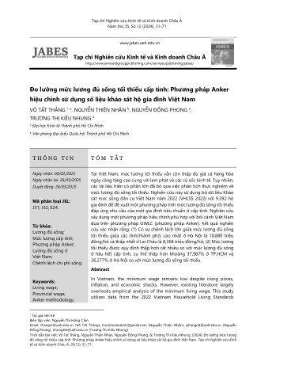
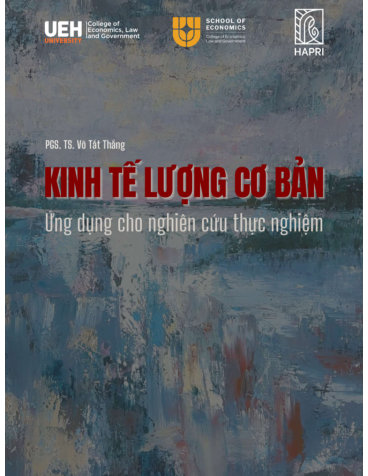
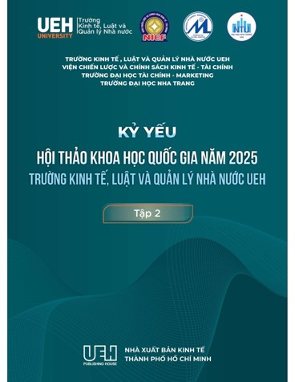
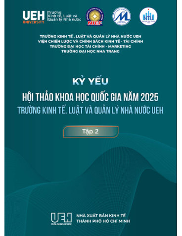
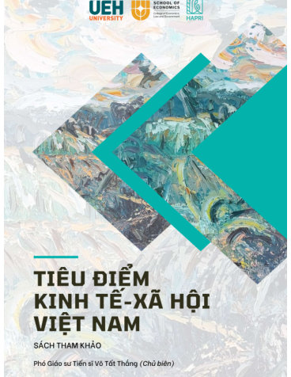
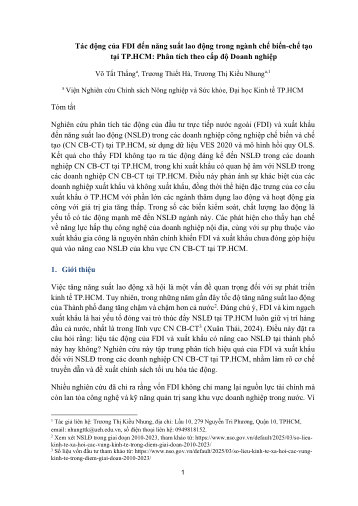
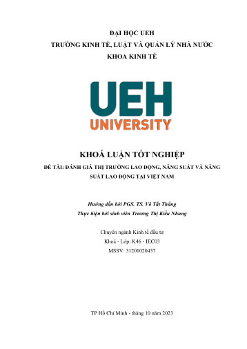

Trương Thị
Kiều Nhung
Trợ lý nghiên cứu · HAPRI · Đại học UEH
Research Assistant · HAPRI · UEH University
Tôi là Trợ lý nghiên cứu tại Viện Nghiên cứu Chính sách Nông nghiệp và Sức khoẻ (HAPRI), Trường Đại học Kinh tế TP. Hồ Chí Minh (UEH). Hướng nghiên cứu chính của tôi nằm ở giao điểm giữa kinh tế vĩ mô và kinh tế y tế.
I am a Research Assistant at the Health and Agricultural Policy Research Institute (HAPRI), University of Economics Ho Chi Minh City (UEH). My primary research interests lie at the intersection of macroeconomics and health economics.
Tôi tốt nghiệp Cử nhân ngành Kinh tế Đầu tư tại Trường ĐH Kinh tế TP.HCM (2020–2023). Từ tháng 9/2022, tôi công tác tại HAPRI, tham gia các dự án về lương đủ sống, đánh giá thị trường lao động và sự thiếu hụt tương đối (relative deprivation) liên quan đến dinh dưỡng và chi tiêu gia đình.
I received my Bachelor's degree in Investment Economics from UEH University (2020–2023). Since September 2022, I have been working at HAPRI, contributing to projects on living wages, labor market assessment, and relative deprivation related to nutrition and household expenditure.
Cử nhân — Kinh tế Đầu tư (Chương trình Tiên tiến)
B.S. — Investment Economics (Advanced Programme)
Trường Đại học Kinh tế TP. Hồ Chí Minh (UEH)
University of Economics Ho Chi Minh City (UEH), Vietnam
Tốt nghiệp loại Giỏi
Graduated with distinction
Ngôn ngữ giảng dạy: Tiếng Việt và Tiếng Anh (50%–50%)
Language of instruction: Vietnamese and English (50%–50%)
Sinh viên 5 Tốt cấp Khoa và cấp Trường ↗ Minh chứng
Students with Five Good Merits — faculty & university level ↗ Proof
Trường Đại học Kinh tế TP. Hồ Chí Minh (UEH) · Được tuyên dương cấp Trường và cấp Khoa Kinh tế
University of Economics Ho Chi Minh City (UEH) · Selected at university level and faculty level
Học bổng Khuyến khích học tập — học kỳ cuối năm 2022 ↗ Giấy xác nhận ↗ Minh chứng
UEH Academic Encouragement Scholarship — fall semester 2022 ↗ Letter of Confirmation ↗ Proof
Trường Đại học Kinh tế TP. Hồ Chí Minh (UEH) · Xếp loại: Giỏi
University of Economics Ho Chi Minh City (UEH) · Category: Distinction
Học bổng dành cho sinh viên có thành tích xuất sắc trong học tập và hoạt động ngoại khóa
Scholarship for outstanding performance in academic and extracurricular activities
Giải A — Nhà Nghiên cứu Trẻ UEH 2022 ↗ Minh chứng
First Prize (A Prize) — UEH Young Researcher 2022 ↗ Proof
Cố vấn: TS. Hà Văn Sơn · Khoa Toán - Thống Kê, Trường Kinh tế, Luật và Quản lý Nhà nước, Đại học Kinh tế TP.HCM Advisor: Dr. Ha Van Son · Faculty of Mathematics and Statistics, School of Economics, Law and Government, University of Economics Ho Chi Minh City (UEH)
UEH cử đại diện tham dự Giải thưởng Nghiên cứu Khoa học Sinh viên Eureka lần thứ 24 · Vào Bán kết ↗ Minh chứng Nominated by UEH to the 24th Eureka Scientific Research Student Award · Semi-finalist ↗ Proof
Trợ lý nghiên cứu
Research Assistant
Viện Nghiên cứu Chính sách Nông nghiệp và Sức khoẻ (HAPRI), Trường ĐH Kinh tế TP.HCM
Health and Agricultural Policy Research Institute (HAPRI), UEH University
279 Đường Nguyễn Tri Phương, Phường Diên Hồng, TP. Hồ Chí Minh
279 Nguyen Tri Phuong Street, Dien Hong Ward, Ho Chi Minh City
Thực tập sinh nghiên cứu
Research Intern
Viện Nghiên cứu Chính sách Nông nghiệp và Sức khoẻ (HAPRI), Trường ĐH Kinh tế TP.HCM
Health and Agricultural Policy Research Institute (HAPRI), UEH University
279 Đường Nguyễn Tri Phương, Phường Diên Hồng, TP. Hồ Chí Minh
279 Nguyen Tri Phuong Street, Dien Hong Ward, Ho Chi Minh City
ASEAN-CGIAR Innovate for Food Regional Program: Gói can thiệp 8 (IP8) – "Chuyển đổi hệ thống thực phẩm hướng đến chế độ ăn uống bổ dưỡng và lành mạnh hơn"
ASEAN-CGIAR Innovate for Food Regional Program: Intervention Package 8 (IP8) – "Food systems transformation for more nutritious and healthy diets"
PGS. Võ Tất Thắng, ThS. Nguyễn Thị Bích Hiền, Trần Mỹ Huyền, Trương Thị Kiều Nhung
Assoc. Prof. Vo Tat Thang, M.A. Nguyen Thi Bich Hien, Tran My Huyen, Truong Thi Kieu Nhung
Vai trò: Nghiên cứu viên
Role: researcher
Tính bền vững hệ thống thực phẩm thủy sản — Cần Thơ
Aquatic food system sustainability — Can Tho City, Vietnam
Phát triển ít phát thải trong hệ thống thực phẩm thủy sản
Mitigation/Low-emission development in aquatic food systems
Tài trợ bởi WorldFish (Trung tâm Quản lý Nguồn lợi Thủy sản Quốc tế)
Funded by WorldFish (International Center for Living Aquatic Resources Management)
Vai trò: Trợ lý nghiên cứu
Role: research assistant
Tiêu Điểm Kinh Tế - Xã hội Việt Nam
Vietnam Socioeconomic Update
Tài trợ bởi Viện Nghiên cứu Chính sách Nông nghiệp và Sức khoẻ (HAPRI)
Funded by the Health and Agriculture Policy Research Institute (HAPRI)
PGS. Võ Tất Thắng, GS. Nguyễn Thiện Nhân, GS. Nguyễn Đông Phong, PGS. Nguyễn Khắc Quốc Bảo, ThS. Nguyễn Thị Bích Hiền, Trần Mỹ Huyền, Trương Thị Kiều Nhung
Assoc. Prof. Vo Tat Thang, Prof. Nguyen Thien Nhan, Prof. Nguyen Dong Phong, Assoc. Prof. Nguyen Khac Quoc Bao, M.A. Nguyen Thi Bich Hien, Tran My Huyen, Truong Thi Kieu Nhung
Vai trò: Nghiên cứu viên · ISBN 978-604-346-383-5
Role: researcher · ISBN 978-604-346-383-5
Kỷ yếu hội thảo Khoa học Quốc gia năm 2025 – Trường Kinh tế, Luật và Quản lý nhà nước UEH (KYHTQG 2025 CELG), Tập 2
National Scientific Conference Proceedings 2025 – UEH School of Economics, Law and Government (KYHTQG 2025 CELG), Vol. 2
① "Tác động của FDI đến năng suất lao động trong ngành chế biến chế tạo tại TP.HCM: Phân tích theo cấp độ doanh nghiệp" — PGS. Võ Tất Thắng, TS. Trương Thiết Hà, Trương Thị Kiều Nhung · trang 12–26
① "Impact of FDI on labor productivity in Ho Chi Minh City's manufacturing sector: A firm-level analysis" — Assoc. Prof. Vo Tat Thang, Dr. Truong Thiet Ha, Truong Thi Kieu Nhung · pp. 12–26
② "Thu nhập không đủ sống và di cư: Bằng chứng từ Việt Nam" — PGS. Võ Tất Thắng, Trương Thị Kiều Nhung · trang 27
② "Insufficient living income and migration: Evidence from Vietnam" — Assoc. Prof. Vo Tat Thang, Truong Thi Kieu Nhung · p. 27
Hội thảo Khoa học — Viện Nghiên cứu Phát triển TP.HCM (HIDS)
Scientific workshop — Ho Chi Minh City Institute for Development Studies (HIDS)
Trình bày tham luận: "Tác động của FDI đến năng suất lao động trong ngành chế biến-chế tạo tại TP.HCM: Phân tích theo cấp độ Doanh nghiệp"
Presented paper: "Impact of FDI on labor productivity in Ho Chi Minh City's manufacturing sector: A firm-level analysis"
Chủ đề hội thảo: Tác động của xuất khẩu và FDI đến năng suất lao động của các doanh nghiệp công nghiệp trên địa bàn TP. Hồ Chí Minh
Workshop theme: impact of exports and FDI on labor productivity of industrial enterprises in Ho Chi Minh City
Kỷ yếu hội thảo Nghiên cứu Khoa học Sinh viên Quốc tế về Kinh tế và Kinh doanh năm 2022 (SRICYREB 2022) — ISBN 978-604-79-3253-5
The International Student Research Conference on Economics and Business (SRICYREB 2022) — ISBN 978-604-79-3253-5
"Các nhân tố ảnh hưởng đến quyết định sử dụng dịch vụ Fintech của sinh viên đại học tại TP. Hồ Chí Minh" — Trương Thị Kiều Nhung, Nguyễn Thị Ngọc Huyền, Nguyễn Thị Cẩm Giang, Quách Yến Vy, Ngô Việt Phúc · trang 280–306
Kỷ yếu
Toàn văn
"Factors affecting university students' decision to use fintech services in Ho Chi Minh City" — Truong Thi Kieu Nhung, Nguyen Thi Ngoc Huyen, Nguyen Thi Cam Giang, Quach Yen Vy, Ngo Viet Phuc · pp. 280–306
Proceedings
Full text
Đổi sách lấy cây ↗ Minh chứng
Book-for-Sapling Exchange ↗ Proof
Chương trình tái chế sách, đổi sách cũ lấy cây xanh · Tổ chức bởi Tổ chức Từ thiện Fly To Sky (Trung tâm Tình nguyện Quốc gia, Nhóm Từ thiện Fly To Sky)
Book recycling initiative — exchanging used books for plant saplings · Organized by Fly To Sky Charity Organization (National Volunteer Center)
Câu lạc bộ Nghiên cứu Kinh tế Trẻ (YoRE) — Trường Đại học Kinh tế TP. Hồ Chí Minh (UEH)
Young Economic Research Club (YoRE) — University of Economics Ho Chi Minh City (UEH)
Thành viên (2021) · Phó trưởng team set-up (2022–2023)
Member (2021) · Vice-Leader, Setup Team (2022–2023)
Hội trại Sinh viên Nghiên cứu Khoa học Euréka 2022 ↗ Minh chứng
Euréka 2022 Student Science Research Camp ↗ Proof
Nha Trang, Khánh Hòa · Tổ chức bởi Trung tâm Phát triển Khoa học và Công nghệ Trẻ (TST)
Nha Trang City, Khanh Hoa Province · Organized by the Center for Youth Science and Technology Development (TST)
Hoạt động thuộc Giải thưởng Sinh viên Nghiên cứu Khoa học – Euréka lần thứ 24
Part of the 24th Eureka Scientific Research Student Award
PGS. TS. Võ Tất Thắng Assoc. Prof. Dr. Vo Tat Thang
Viện trưởng, Viện Nghiên cứu Chính sách Nông nghiệp và Sức khoẻ (HAPRI) · Giảng viên, Trường Kinh tế, Luật và Quản lý nhà nước, UEH
Director, Health and Agricultural Policy Research Institute (HAPRI) · Lecturer, School of Economics, Law and Government, UEH
thangvt@ueh.edu.vn · (848) 3844-8222
Phần này tổng hợp toàn bộ ví dụ thực hành trong cuốn sách Kinh tế lượng cơ bản — Ứng dụng cho nghiên cứu thực nghiệm của PGS. Võ Tất Thắng, dưới hai phiên bản: Python (Jupyter Notebook) và Stata (do-file). Lưu ý: nội dung sách thuộc bản quyền tác giả — phần dưới đây chỉ đăng phần ví dụ thực hành liên quan.
This section reproduces all practical examples from the textbook Basic Econometrics — Applications for Empirical Research by Assoc. Prof. Vo Tat Thang, in two versions: Python (Jupyter Notebook) and Stata (do-file). Note: textbook content is copyrighted — only the worked examples are shared here.
Mua sách tại UEH Bookstore Buy the Book at UEH Bookstore